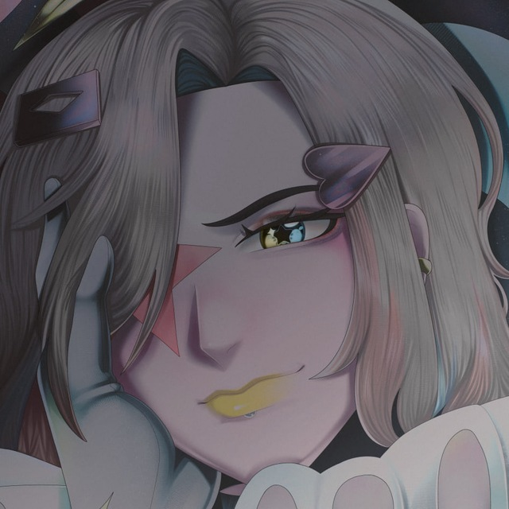

01 — Начало
Приветствую.
Я Aurumh.
Я хочу, чтобы люди видели во мне что-то интересное, манящее, увлекательное, будто открыли книгу с магическими письменами.
«Каждый день — я разный...»

AURUMHELL
Frontend-разработчик / Создатель миров
Стихия: Золото и Тень ✨
02 / Происхождение
Золото и Эзотерика
Рождение имени
Мой ник произошел благодаря изучению химии. Мне понравилось, что золото на латыни это Aurum — звучит как Аура, магия. Частица Hell добавилась совершенно случайно.
Сначала это был просто ник с набором букв aurumhdj, потом я сократил его до aurumh, а впоследствии сделал полноценное — Aurumhell. Теперь это не просто буквы, это часть моей личности.
Мифология и корни
Я немного увлекаюсь мифологией и снами. Мне безумно нравится сама мистическая эстетика и поиск скрытых смыслов.
Моя связь с магическим миром не случайна: в моем роду были практикующие эзотерику, а искреннюю любовь к этому привязала собственная мама, благодаря её увлечению сериалом «Зачарованные».
03 / Магические увлечения
Страницы моей книги
Внутри моей вселенной сплетаются игры, музыка и истории персонажей, которых я создаю. Вот что вдохновляет меня больше всего.
Genshin Impact
Моя любимая игра. Я очень привязался к миру Тейвата и его истории — даже если забрасываю, всегда возвращаюсь обратно. Мой любимый персонаж оттуда — Фурина. Мы с ней очень похожи, как зеркальные отражения.
Прописание лора
Люблю слушать музыку и прописывать лор своих героев. Сейчас этим не сильно увлечен, но в целом обожаю создавать персонажей — например, Айри Де'Виль, Ведьму крови и теневых растений, путешествующую по разным вселенным.
Эзотерика и Сны
Практики эзотерики, влияние «Зачарованных», толкование снов и изучение мифов. Это не просто хобби, это эстетика, пропитывающая мой подход к дизайну и программированию.
Музыка и Код
Я часть команды разработчиков. Как Frontend-программист, я создаю интерфейсы под вдохновляющую музыку, вплетая магию визуального стиля в строгие рамки кода.